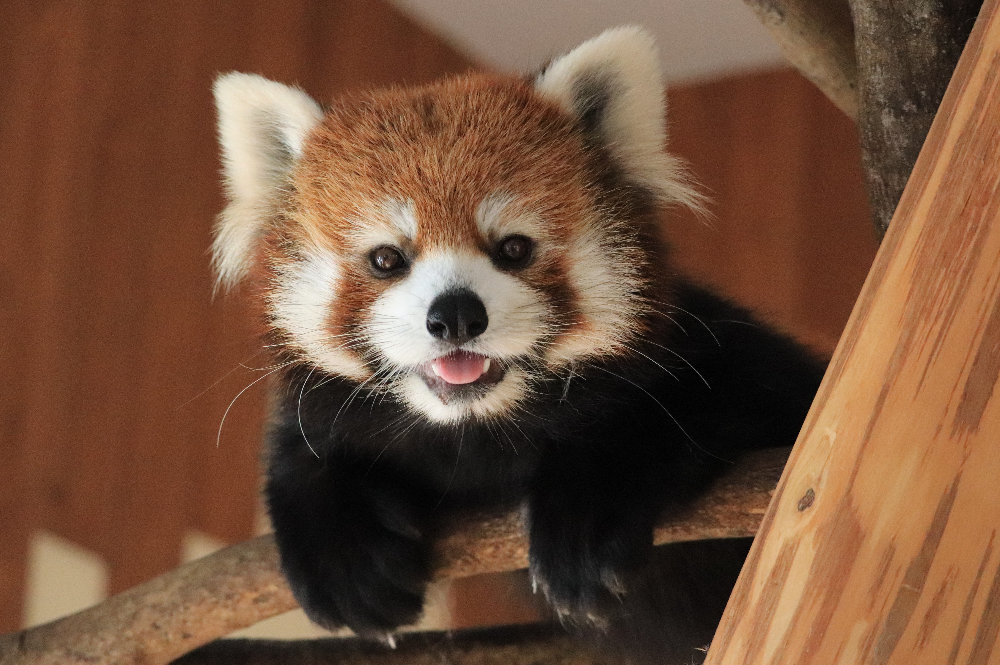

ANIMAL
| レッサーパンダ | ジャイアントパンダ | バンドウイルカ |
|  | |
|
| 名前 | レッサーパンダ 会話する！⇒ |
|---|---|
| 分類 | 食肉目レッサーパンダ科レッサーパンダ属 |
| 生息地 | ブータン・中国・ミャンマー・インド・ネパールの標高1500～4000mの森林 |
| 説明 | もともとは肉食だが、現在のレッサーパンダの主食は竹や木の実。長いふさふさの尻尾が特徴的。 かわいい見た目とは裏腹に荒い気性で、小さな物音にも敏感でいつも周囲を警戒している。日本の動物園ではよく飼育されているが絶滅危惧種に指定されている。 |


| 名前 | ジャイアントパンダ 会話する！⇒ |
|---|---|
| 分類 | 食肉目クマ科ジャイアントパンダ属 |
| 生息地 | 中国（四川省など） |
| 説明 | 主食は竹の幹や葉。野生のジャイアントパンダは1日に体重の約40％もの竹を食べる。そのため、1日の半分以上を食事に費やすこともある。 動物園で動き回る姿を見られるのはレアかも・・・！現在レッドリストでは、絶滅危惧種から危急種に引き下げられた。 |


| 名前 | バンドウイルカ 会話する！⇒ |
|---|---|
| 分類 | クジラ目ハクジラ亜目マイルカ科バンドウイルカ属 |
| 生息地 | 熱帯～温帯海域の世界中の海 |
| 説明 | イルカの中でも最もよく知られていて、動物園での飼育数も最も多いバンドウイルカ。魚・イカ・甲殻類を好んで食べる。 群れで行動していて、エコーを使って会話をしたり獲物の位置を確認したりしている。動物の中でトップクラスの知能を持つと言われている。 |

| チーター | フンボルトペンギン | カリフォルニアアシカ | |
 |
 |
 |
and more... |